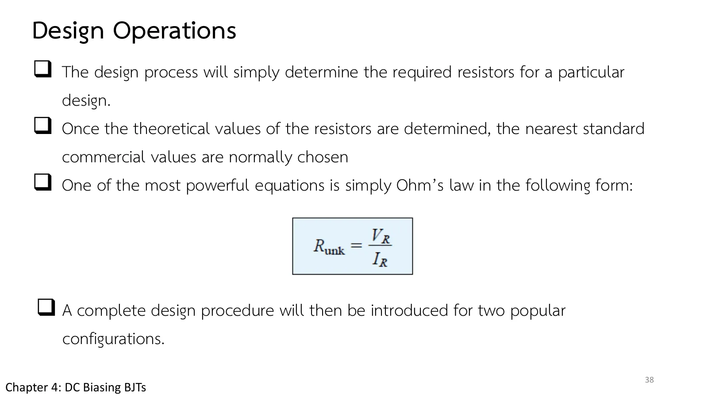
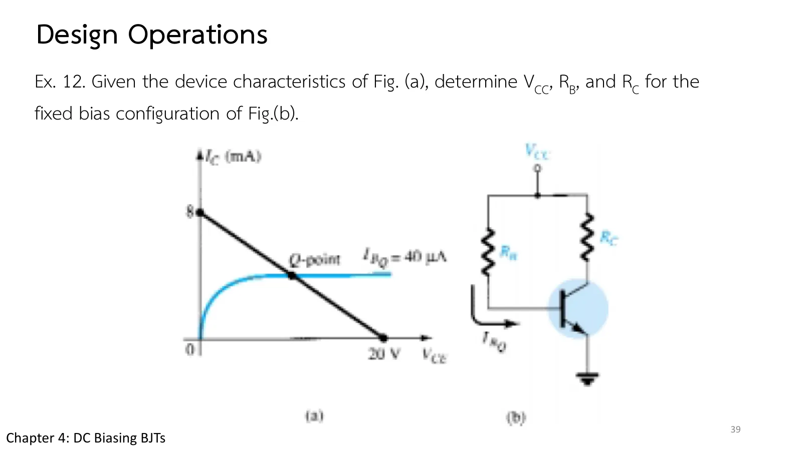

Chapter 4 slides pp. 38–41. Design runs the other way: given the operating point, find the resistors. The main tool is Ohm's law in the form \(R = V_R/I_R\), once the voltage across and the current through each resistor are known from the specification; then the nearest standard values are chosen (the resulting shift is accepted as part of the design). When the specification is not enough, engineering judgment steps in: \(V_E = V_{CC}/10\) and \(R_2 \le \beta R_E/10\). This page has a voltage-divider design tool where you move the targets and see the resistors, their standard values and the Q actually reached (section A), Ex.12–Ex.14, and the complete designs (Examples 4.24–4.25).
Analysis against design: analysis knows the circuit and finds the currents and voltages; design knows the currents and voltages wanted and finds the circuit. The path is less defined and needs some assumptions of your own (slide p. 38).
Ohm's law: for each resistor \(R = V_R/I_R\); the voltage across it usually follows from the specification (e.g. \(V_{RC} = V_{CC} - V_C\)) and the current from \(I_C\), \(I_B = I_C/\beta\) (Eq. 4.49).
From a load line (Ex.12): the intercepts give \(V_{CC}\) and \(V_{CC}/R_C\); the \(I_B\) curve of Q gives \(R_B\).
Standard values: take the nearest E24 value (or two in series, e.g. 82 kΩ + 4.7 kΩ) and check that Q moves no more than is acceptable (about 5 %).
A complete design (Examples 4.24–4.25): choose \(V_E = V_{CC}/10\) (a quarter to a tenth of the supply), giving \(R_E\), then \(R_C\) from the wanted \(V_{CE}\). For a divider use \(R_2 \le \beta R_E/10\), so the divider current is at least 10 times \(I_B\), then \(R_1\) from the divider rule.

สไลด์บทที่ 4 หน้า 38: หลักของการออกแบบ · แตะรูปเพื่อขยายChapter 4 slide p. 38: the design principle · tap to enlarge
สไลด์หน้า 41 (Ex.14) อ้าง "Fig. 4.49" ตามเลขรูปของตำราฉบับก่อน ในฉบับที่ 11 คือรูป 4.61 · สไลด์หน้า 1 เขียนว่า Part I แต่ไม่มีไฟล์ Part II ของบทนี้
Slide p. 41 (Ex.14) refers to "Fig. 4.49", the figure number of an earlier edition; in the 11th it is Fig. 4.61. Slide p. 1 says Part I, but there is no Part II file for this chapter.
A
ออกแบบวงจรตัวแบ่งแรงดันให้ได้จุด Q ที่ต้องการ
Designing a voltage-divider circuit for a wanted Q
Set the targets \(V_{CC}\), \(I_{CQ}\), \(V_{CEQ}\) and β, and the tool follows the steps of Example 4.25: \(V_E = V_{CC}/10\) → \(R_E\) → \(R_C\) → \(V_B\) → \(R_2 = \beta R_E/10\) → \(R_1\), then rounds to E24 standard values. The simulation is the circuit built from the standard values; the Q actually reached (yellow) is compared with the target (green) on the load line.
1
Ex.12: ไบแอสคงที่จากลักษณะสมบัติ
Ex.12: fixed bias from the characteristics
สไลด์หน้า 39 · Boylestad Example 4.21 (รูป 4.59)
Slide p. 39 · Boylestad Example 4.21 (Fig. 4.59)

สไลด์หน้า 39: Ex.12 · แตะรูปเพื่อขยายSlide p. 39: Ex.12 · tap to enlarge
The load line of Fig. (a) runs from 8 mA to 20 V, and Q lies on the \(I_{BQ}\) = 40 µA curve. Determine \(V_{CC}\), \(R_B\) and \(R_C\) for the fixed-bias circuit of Fig. (b).
In section A set \(V_{CC}\) = 20 V, \(I_{CQ}\) = 10 mA, \(V_{CEQ}\) = 8 V, β = 80 (Example 4.25): \(R_E\) = 200 Ω, \(R_C\) = 1 kΩ, \(R_2\) = 1.6 kΩ, \(R_1\) = 10.25 kΩ → 10 kΩ; the actual Q moves by a few per cent.
Try \(V_{CEQ}\) close to \(V_{CC}\): \(R_C\) becomes too small to design (some voltage must be left for \(R_C\) and \(R_E\)).
Try this 2 — why \(V_E = V_{CC}/10\)
A large \(R_E\) gives stability, but a large \(V_E\) eats into the swing of \(V_{CE}\); the book takes about a tenth of the supply as the conservative choice.
\(R_2 \le \beta R_E/10\) is the criterion of page 4.3 in design form: the divider current must be at least 10 times \(I_B\).